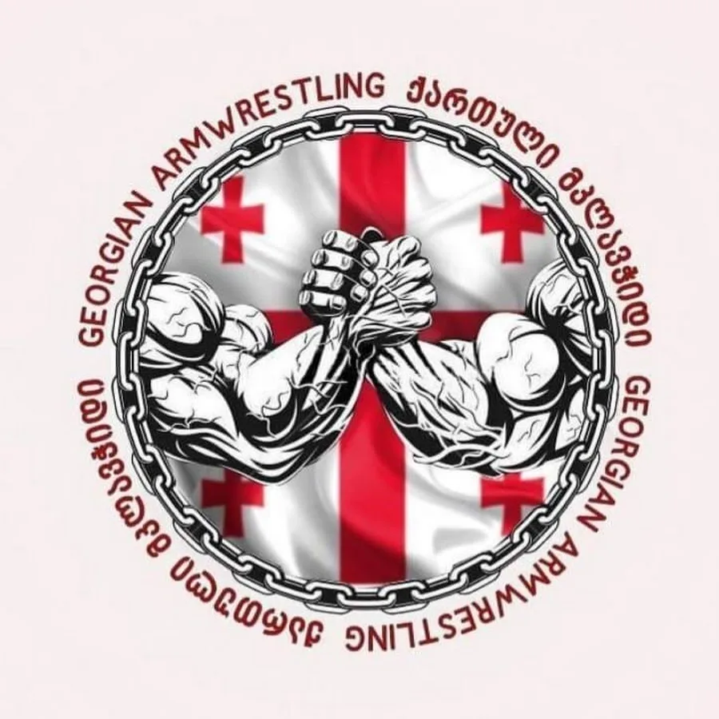

ჩემი საყვარელი სპორტია მკლავჭიდი
მკლავჭიდის შესახებ 1989 წელს ივანე ჯავახიშვილის სახელობის თბილისის სახელმწიფო უნვიერსიტეტიში ჩატარდა პირველი ჩემპიონატი მკლავჭიდში, საქართველოს მასშტაბით. 1989 წელს საქართველოს ჩემპიონი გახდა ერეკლე გურჩიანი , რომელიც დღეისათვის მკლავჭიდის ეროვნული ფედერაციის პრეზიდენტია. თსუ-ში მკლავჭიდის პირველი გუნდი 1989 წელს ჩამოყალიბდა და მას შემდეგ მრავალ ჩემპიონატზე გახდა საპრიზო ადგილების მფლობელი. 2011-2012 წლებში თსუ-ს მკლავჭიდის გუნდმა უნივერსიტეტებს შორის ჩემპიონატზე ოქროს მედლები მოიპოვა.
